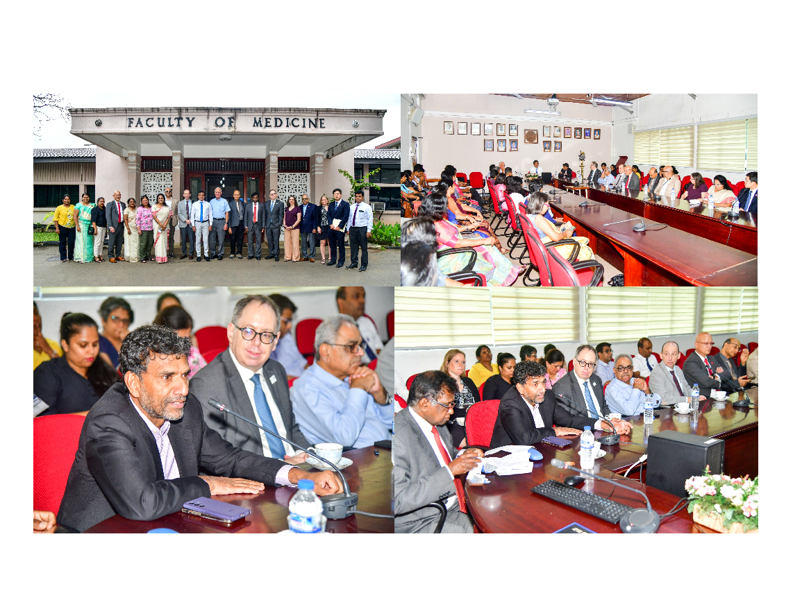
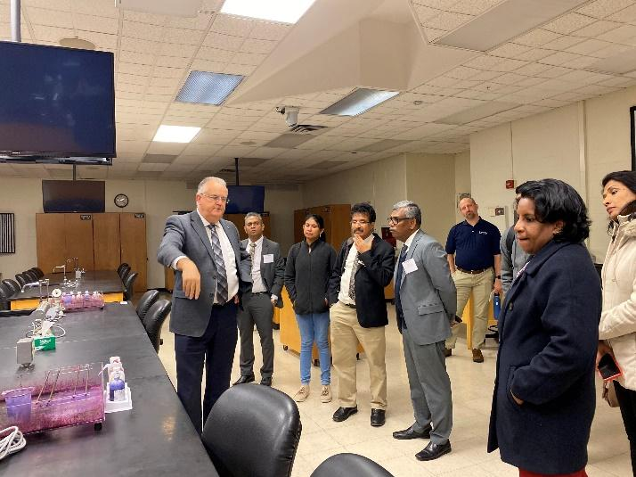
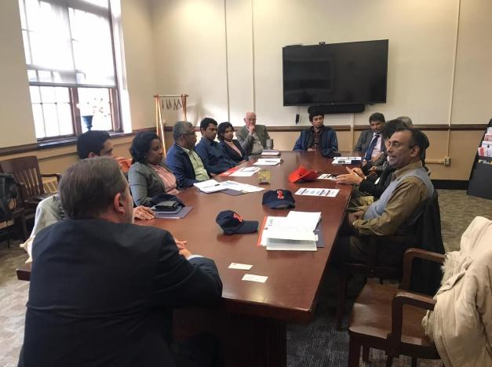
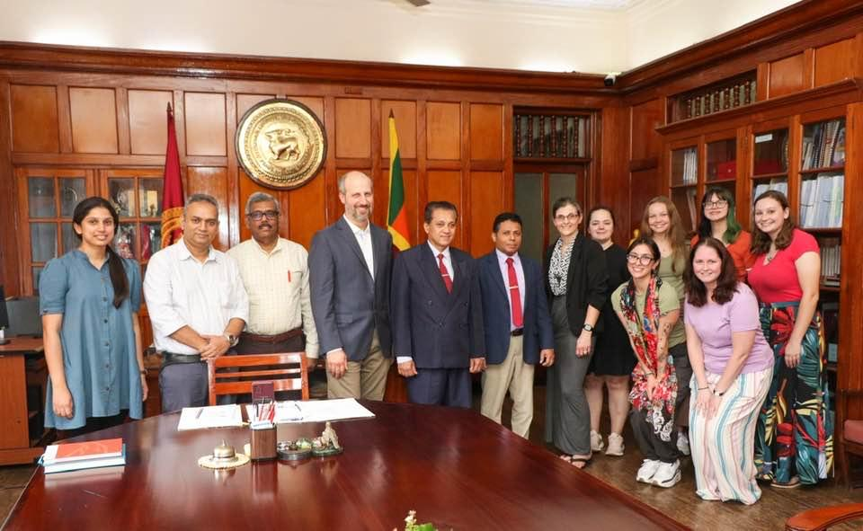

Historical Foundation of the Collaboration
The origins of this partnership can be traced to the early 1970s. What began as agricultural and medical education cooperation has evolved over five decades into a wide-ranging, multidisciplinary global collaboration.
1970s
INTSOY Soybean Program — Agricultural Foundation
Sri Lanka benefited from international efforts led by the University of Illinois through the UNDP-supported INTSOY program, which introduced and promoted soybean cultivation. This initiative demonstrated its potential as a high-protein crop contributing to food security, agricultural diversification, and rural development.

UIC Medical Education Exchange
The University of Illinois Chicago (UIC), through its Department of Medical Education, contributed significantly to the development of modern medical education in Sri Lanka. Sri Lankan academics received advanced training at UIC and returned to establish foundational structures at the University of Peradeniya — leading to the creation of Sri Lanka's first formal Medical Education Unit.

Solar Energy Awareness Programs Begin
Multiple awareness and capacity-building programs were launched across Sri Lankan universities to promote solar energy technologies. Research into thin-film solar cell development and prototype manufacturing began, marking the expansion of the collaboration into the renewable energy sector.
Present
Sivananthan Laboratories Joins — Modern Research Phase
The collaboration was further strengthened through the active engagement of Sivananthan Laboratories Inc., led by distinguished University of Peradeniya alumnus Dr. Sivalingam Sivananthan. This phase expanded cooperation into applied research, technology development, and innovation-driven initiatives across renewable energy, agriculture, and health sciences.

Expansion of Medical & Health Sciences Research
Medical and health sciences collaboration expanded significantly with faculty exchanges, training programs, and joint research initiatives across nephrology, neurology, mental health, immunology, surgery, and rehabilitation medicine. AI in medical education emerged as a key priority.

Present
🏛️ Formal Center Proposed — PISCC Established
The Peradeniya–Illinois–Sivananthan Collaboration Center (PISCC) is formally proposed, transitioning fifty years of informal partnership into a structured, accountable, and scalable institutional framework — ensuring long-term sustainability, strategic growth, and global impact.